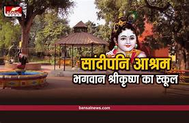
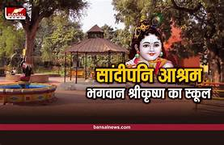

WELCOME TO THE TEMPLE CITY OF MADHYA PRADESH
MAHAKAL LOK
this is a city of temples and the mahakal jyotirling is famous in out of 12 jyotirling .
SANDIPANI AASHRAM
This is a place where god Krishna got his education
 

MANGALNATH
This is also famous because this is place where a miracle happened the bheronath drink wine
SHANI MANDIIR
this is shani mandir